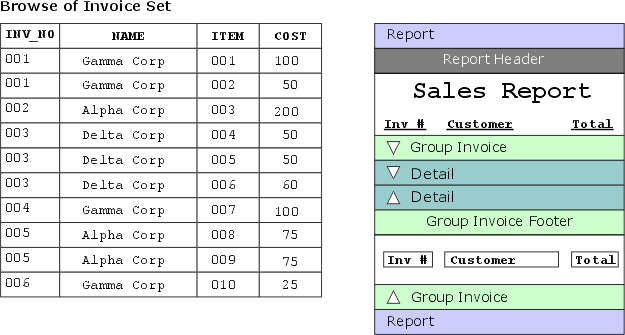

Grouping Related Records
Grouping levels are sections you create to divide (group) records into logically related collections (groups). For example, you have a Product table and you want to create an Inventory report to list them. To make the report easier to read, you want to divide records according to the table's Category field. To do this, you create a grouping level and specify the Category field as the group break expression. The group break expression is used to indicate how records should be grouped.
When the report is run, Alpha Anywhere automatically orders and groups the products by Category.
A group break expression generally uses a single field from a table to determine when the break occurs. as Alpha Five lists the records in the detail section, it evaluates the group break expression once for each record processed. If the value changes, a group break occurs.
In this example, both the <span class=Bolded>Group Header</span> and <span class=Bolded>Group Footer</span> edit regions are used. You can choose to omit or include these edit regions:
While the Report Editor is open select Report > Properties > Group Properties... to display the Group dialog.
Select the group and click OK.
In the <span class=Screen>Group Properties</span> dialog box display the Head/Foot tab.
Check and clear the appropriate check boxes. You can also make the Group Header and Group Footers appear on each page.
Grouping levels are created by selecting Report > Insert Group Break. When you create a new grouping level, the Group Properties dialog box appears in which you specify the group break expression.
Alpha Anywhere also lets you put groups inside of other groups. For example, you can divide a customer Report into states and cities, and provide totals for each.
The Group Properties dialog box also lets you create a secondary ordering for the records that appear in a group.
When creating two or more groups, you need to specify where you want the new groups to be positioned. Each section has a section-title bar above and below the detail edit region. To specify where you want the new grouping level to be inserted, click the upper section-title bar, below the desired insertion point. For example, if your report already has one level of grouping and you want to insert a group on the outside, click the first group's section-title bar. If instead you want to place the group inside of the other group, click the detail section's section-title bar.
Select the top of a group to insert a new group before it.
Right click and select Insert Group... .
Drag the data field you are going to group on from the Drag and Drop list to the new group area. You will probably want to delete the label and keep only the field.
Format the data field as appropriate.

Select the top of a detail section to insert a new group before it.
Right click and select Insert Group... .
Drag the data field you are going to group on from the Drag and Drop list to the new group area. You will probably want to delete the label and keep only the field.
Format the data field as appropriate.
You can remove a group, by clicking the group's section title bar and then selecting Report > Delete Group Break.
Creating a Group Break Expression
A group break expression can consist of either a single field, or an expression consisting of several fields and functions.
In many cases, the group break expression contains a single field. For example, you have a sales report that shows the invoices entered for each day. For each invoice record, the Date field stores the date on which the invoice was entered. By using the Date field as the break expression, the records are grouped by day.
There may be times when you want to use more than just a field when entering a group break expression. In the previous example, suppose instead you want to group the invoices by Month, instead of by day. While each invoice has a Date field that stores the date when it was entered, there is no field that contains just the month. By using the MONTH() function, you can enter MONTH(DATE) as the break expression to properly group the records. (You use the MONTH() functions to extract the month from a date.)
By default, groups of records are ordered by the group break expression. For example, you have a report that groups invoice line-items and displays a total for each invoice. The group break expression is on the field Inv_NO :

If you do not change the group order parameters, the Inv_NO field determines the order in which the groups appear when you print the report:
Suppose, however, you want to order the invoices by the Name of the customer instead of the invoice number. You can specify the Name field as the group order expression:
Your other grouping option, besides ordering on the break expression and specifying additional group ordering, is to not order the records at all. If the records in your table or set are already in the correct order, as they were in the first example, you can click the No additional ordering radio button. Using this option reduces the processing time needed when you preview or print the Report.
See Also